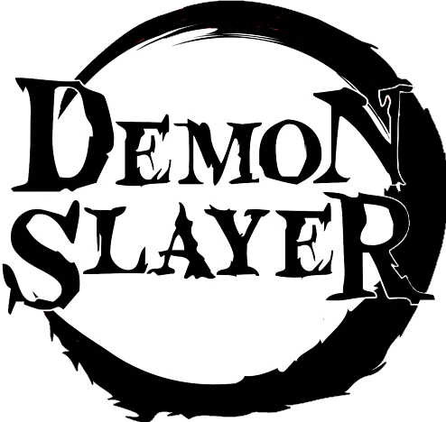

Um dia, ao voltar para casa, Tanjiro descobre que toda sua família foi morta por demônios, sendo que uma de suas irmãs, Nezuko, é a única que sobreviveu ao ataque. Nezuko então passa a ser um demônio, mas ela ainda demonstra sinais de emoções e pensamentos humanos. Tanjiro decide então se tornar um caçador de demônios, e com a ajuda de Nezuko, passa a caçar demônios enquanto que ele busca uma maneira de tornar Nezuko humana novamente.